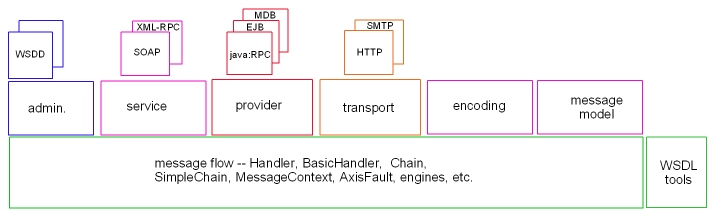

Axis began with a strong architectural vision which resulted in the flexibility and generality of the current Axis implementation. However, over time the Axis implementation has blurred the clean structure envisaged by the architecture with the result that Axis is now quite difficult to maintain, extend, and understand, especially for newcomers.
After v1.0 of Axis has shipped, it is hoped to rework Axis into separate, properly layered subsystems along the lines of the following diagram.

However, unless something is done to prevent it, any re-architecture will eventually succumb to the problem of eventual blurring of structure as code fixes are applied and function is added.
Clearly this could be done by splitting Axis into separately built Apache projects, but this seems to be overkill as several of the Axis subsystems are useless in isolation.
A better approach is to define a partial ordering of subsystems with a 'depends on' relationship to drive the build. Each subsystem would be built in turn and subsystems would be built before other subsystems which depend on them.
In addition, the build of each subsystem should only provide access to the subsystems in the transitive closure of the 'depends on' relationship starting at the subsystem to be built.
So, for example, suppose the subsystems A, B, C, and D had the following 'depends on' relationships:
A depends on B depends on D C depends on DThen the build orders would any one of:
D, C, B, A D, B, C, A D, B, A, Cand the classpaths for building each of the subsystems would be:
D: [base] C: D, [base] B: D, [base] A: B, D, [base]where [base] indicates the basic classpath common to all the subsystem builds.
Apart from preserving the subsystem layering, such a strategy would make it trivial to extract subsets of Axis function or replace subsystems with alternative implementations. There would also be a re-build and re-test advantage in that changes to a higher-level subsystem would not require lower level subsystems to be re-built and regression tests of lower-level subsystems would be guaranteed not to be impacted.